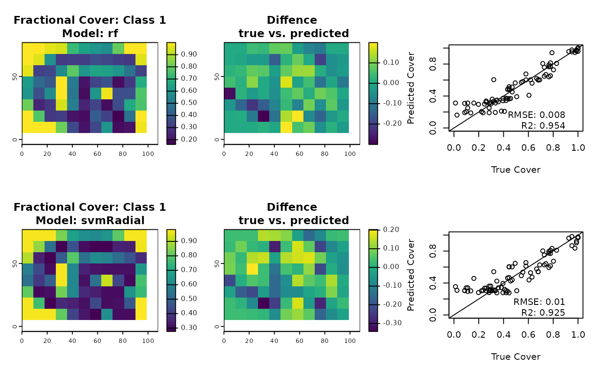

fCover takes a classified high resolution image, e.g. vegetation and non-vegetation based on Landsat and calculates cover fractions for pixels of a coarser resolution, e.g. MODIS.
Usage
fCover(
classImage,
predImage,
nSamples = 1000,
classes = 1,
maxNA = 0,
clamp = TRUE,
model = "rf",
tuneLength = 3,
trControl = trainControl(method = "cv"),
method = deprecated(),
filename = NULL,
overwrite = FALSE,
verbose,
...
)Arguments
- classImage
high resolution SpatRaster containing a landcover classification, e.g. as obtained by superClass.
- predImage
coarse resolution SpatRaster for which fractional cover will be estimated.
- nSamples
Integer. Number of pixels to sample from predImage to train the regression model
- classes
Integer. Classes for which fractional cover should be estimated (one or more).
- maxNA
Numeric. Maximal proportion of NAs allowed in training pixels.
- clamp
Logical. Enforce results to stay within [0,1] interval. Values <0 are reset to 0 and values >1 to 1.
- model
Character. Which model to fit for image regression. See train for options. Defaults to randomForest ('rf')
- tuneLength
Integer. Number of levels for each tuning parameters that should be generated by train. See Details and
train.- trControl
trainControlobject, specifying resampling, validation etc.- method
DEPREACTED! in favor of
trControl=trainControl(method="cv")Resampling method for parameter tuning. Defaults to 10 fold cross-validation. SeetrainControlfor options.- filename
Character. Filename of the output raster file (optional).
- overwrite
Logical. if
TRUE,filenamewill be overwritten.- verbose
Logical. Print progress information.
- ...
further arguments to be passed to
writeRaster
Value
Returns a list with two elements: models contains the fitted models evaluated in tenfold cross-validation (caret train objects); fCover contains a SpatRaster with a fractional cover layer for each requested class.
Details
fCover gets the pixel values in a high resolution classified image that correspond to randomly selected moderate resolution pixels and then calculates the percent of the classified image pixels that represent your cover type of interest. In other words, if your high resolution image has a pixel size of 1m and your moderate resolution image has a pixel size of 30m the sampling process would take a block of 900 of the 1m resolution pixels that correspond to a single 30m pixel and calculate the percentage of the 1m pixels that are forest. For example, if there were 600 forest pixels and 300 non-forest pixels the value given for the output pixel would be 0.67 since 67
fCover relies on the train() function from the caret package which provides access to a huge number of classifiers. Please see the available options at train. The default classifier (randomForest) we chose has been shown to provide very good results in image regression and hence it is recomended you start with this one. If you choose a different classifier, make sure it can run in regression mode.
Many models require tuning of certain parameters. Again, this is handled by train from the caret package. With the tuneLength argument you can specify how many different values of each tuning parameter should be tested. The Random Forest algorithm for example can be tuned by varying the mtry parameter. Hence, by specifying tuneLength = 10, ten different levels of mtry will be tested in a cross-validation scheme and the best-performing value will be chosen for the final model.
If the total no-data values for a block of high resolution pixels is greater than maxNA then it will not be included in the training data set since there is too much missing data to provide a reliable cover percentage. If the no-data proporton is less then maxNA the no-data pixels are removed from the total number of pixels when calculating the percent cover.
Examples
# \donttest{
library(terra)
library(caret)
#> Loading required package: lattice
## Create fake input images
agg.level <- 9
modis <- terra::aggregate(rlogo, agg.level)
## Perform an exemplary classification
lc <- unsuperClass(rlogo, nClass=2)
## Calculate the true cover, which is of course only possible in this example,
## because the fake corse resolution imagery is exactly res(rlogo)*9
trueCover <- terra::aggregate(lc$map, agg.level,
fun = function(x, ...){sum(x == 1, ...)/sum(!is.na(x))})
## Run with randomForest and support vector machine (radial basis kernel)
## Of course the SVM is handicapped in this example,
## due to poor tuning (tuneLength)
par(mfrow=c(2,3))
for(model in c("rf", "svmRadial")){
fc <- fCover(
classImage = lc$map ,
predImage = modis,
classes=1,
trControl = trainControl(method = "cv", number = 3),
model=model,
nSample = 50,
tuneLength=2
)
## How close is it to the truth?
compare.rf <- trueCover - fc$map
plot(fc$map, main = paste("Fractional Cover: Class 1\nModel:", model))
plot(compare.rf, main = "Diffence\n true vs. predicted")
plot(trueCover[],fc$map[], xlim = c(0,1), ylim =c(0,1),
xlab = "True Cover", ylab = "Predicted Cover" )
abline(coef=c(0,1))
rmse <- sqrt(global(compare.rf^2, "sum", na.rm = TRUE))/ncell(compare.rf)
r2 <- cor(trueCover[], fc$map[], "complete.obs")
text(0.9,0.1, adj=1, labels =
paste(c("RMSE:","\nR2:"), round(unlist(c(rmse, r2)),3), collapse=""))
}

## Reset par
par(mfrow=c(1,1))
# }